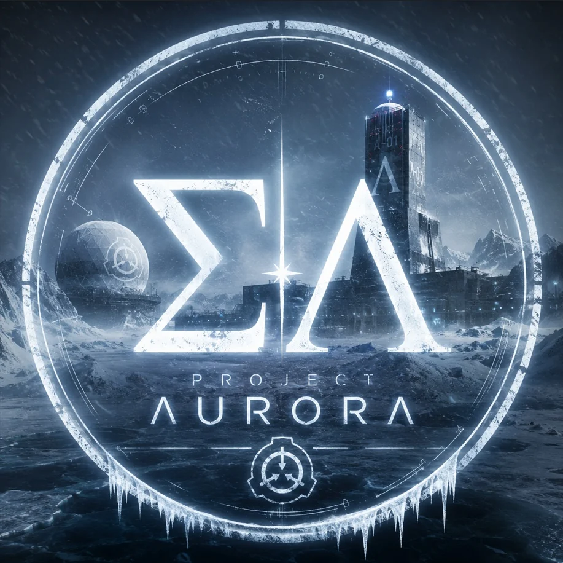
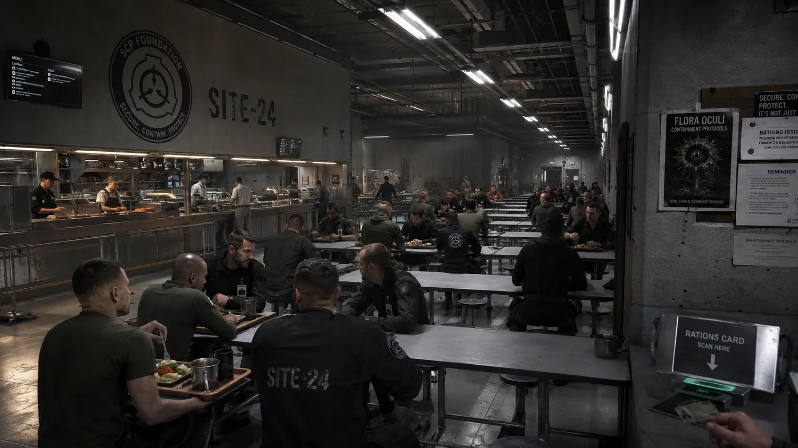

PROJECT
AURORA
An 18+ sci-fi roleplay world I've built and directed since day one — from a cold launch to a living community.
I've been on Project Aurora since day one — first as consultant, then Canon Director, now Executive Director on the Aurora Board. Roughly 99% of the build is my work: onboarding, governance, events, canon, security and the full visual identity.
Every community faces the same wall twice: the cold launch, where an empty server has to become a place worth returning to — and the slow death, where the launch buzz fades and activity quietly bleeds out.
Aurora is the proof I can win the first one. The systems below are how I hold the second.
Cold launch. Empty room.
A new server had to become a place worth returning to with no established rhythm to inherit.
Build the full operating layer.
Onboarding, governance, staff structure, events, canon operations, moderation/security and a visual identity designed as one system.
9 → 2,508 msgs/day.
Launch activity reached 2,508 messages on day fourteen, backed by systems intended to convert launch energy into retention.
A cold launch I ran and drove from 9 messages on day one to 2,508 on day fourteen — the launch-and-engagement problem most communities fail. Sustaining it long-term is the job of the systems below.
SCPIP database & operations
SCPs enter play uncontained; members roleplay containment, run the research and file after-action reports into a living operational database.
Foundation Handler System
Trusted members claim each new sign-up within 24h, run their first scene, and check in at day 3 and 30. Success = still active after 30 days.
Staff organisation & recruiting
Full staff structure with defined roles and departments, plus recruitment posts, graphics and application flows to fill them.
Tiered ruleset & enforcement
Four severity tiers, escalation, a discretion clause and appeals. Age policy and safety built in from day one.
Moderation & server security
Mod-log systems, anti-nuke and anti-raid protection, verification, and the server setup that keeps the place safe.
Event design & GM playbook
A step-by-step event process and detailed live briefings that keep large group events readable.
The Handler System, stage by stage.
Sign-up
A new member arrives. From this moment the clock is running: the target is a real human interaction inside twenty-four hours, not a welcome message into a void.
Handler claim
A trusted member claims the new sign-up within 24h. Ownership is explicit — one named person is responsible for that arrival rather than "the staff team" in general.
First scene
The handler runs the member's first scene in-world. The first thing a new member does is participate, not read rules — the culture is transmitted by playing it.
Day 3 check-in
A deliberate second touch while the member is still deciding whether this place is for them. Early friction gets caught here instead of turning into a silent exit.
Day 30 check-in
The final scheduled contact of the onboarding path, and the point where the system is measured.
Success condition
Still active after thirty days. Not "joined", not "said hello" — the system is only counted as working when the member is still there a month later.



